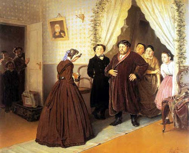

Gittin 52 - Administrator for the deceased

If orphans have asked an administrator to manage their affairs, or if the father has appointed one, the administrator has to tithe their food, making sure it is kosher. If the court has appointed an administrator, additionally he needs to swear that he retained nothing of theirs, at the end of his duty.
Why is this? If he administrator is doing a favor to the deceased father, he will not accept the responsibility if he has to swear. With court appointment, he accepts the responsibility because of the good reputation resulting from it, so an oath is not a deterrent.
Art: Приезд гувернантки в купеческий дом, Василий Перов (Arrival of a governess into a rich house)